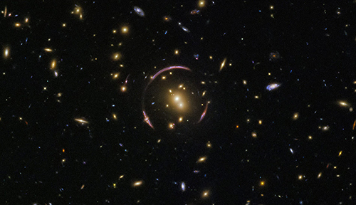
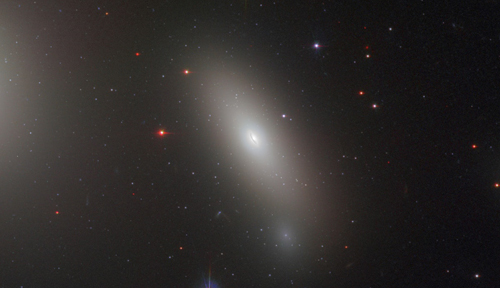
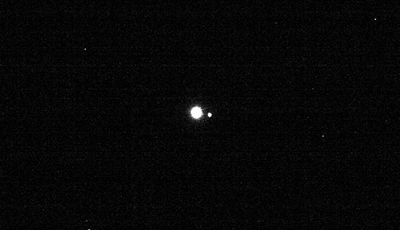

MyDiscoveries.ru Дата публикации: 13.05.2018

На самом деле на этом фото запечатлены сотни и даже тысячи галактик. Перед нами — редкое и впечатляющее явление, которое называют кольцом Эйнштейна. Оно возникает, когда гравитация массивного тела настолько искривляет вокруг себя пространство-время, что электромагнитное излучение отклоняется от прямых траекторий.
MyDiscoveries.ru Дата публикации: 14.04.2018

Где можно найти древние галактики, практически не изменившие структуру с момента своего образования? Наверняка, их следует искать на краю Вселенной. Но, как оказалось, подобные объекты можно обнаружить неподалеку от нашего Млечного Пути. NGC1277 — одна из таких уникальных законсервированных галактик, и благодаря ей мы сможем узнать больше о структуре молодых галактик на раннем этапе жизни Вселенной.
MyDiscoveries.ru Дата публикации: 17.04.2018

Уже с небольшого по космическим меркам расстояния в 63 миллиона километров наша Земля и ее естественный спутник выглядят как маленькие песчинки света. Только два этих небесных тела в безбрежном океане космоса смог пока что покорить человек, побывав на них самостоятельно.